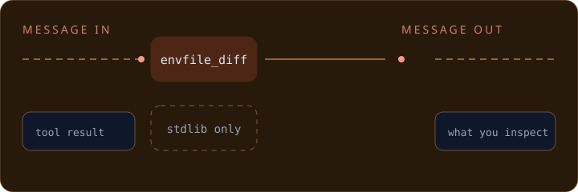

Install
consolepip install envfile-diff
Use
consoleenvfile-diff old.env new.env # masked
envfile-diff old.env new.env --show-values # the real values
envfile-diff old.env new.env --json # {"added": [...], "removed": [...], ...}
envfile-diff old.env new.env --exit-code # CI gate: exit 1 when they differ
pythonfrom envfile_diff import diff_env, diff_files, parse_env, render
diff = diff_files(".env.staging", ".env.production")
diff.is_empty
diff.added, diff.removed, diff.changed, diff.unchanged
for change in diff.changes(): # sorted by key
print(change.key, change.kind) # "added", "removed" or "changed"
print(render(diff, show_values=False))
What the parser understands
- comments and blank lines,
export KEY=value KEY=(empty), spaces around="double quoted"values with\n,\t,\r,\",\\escapes'single quoted'values, taken literally,#inside any quotes- a trailing
# commentafter an unquoted value - CRLF files, keys with dots or dashes (
DB.HOST,MY-KEY) - a repeated key keeps the last value, as a shell does
A line that is not an assignment raises EnvParseError with the line number instead of being silently dropped — a typo in a .env file is exactly the kind of thing you want to hear about.
Values never leak by accident
Masking is the default in the function (render(show_values=False)), in the CLI and in --json. Even with --json the payload holds key names only; --json --show-values is the one combination that prints values.
Development
consolepython -m venv .venv
.venv/bin/pip install -e ".[test]"
.venv/bin/pytest
The suite covers every line of the package (pytest --cov --cov-branch), and the examples in the docstrings run as tests through --doctest-modules.
License
MIT.